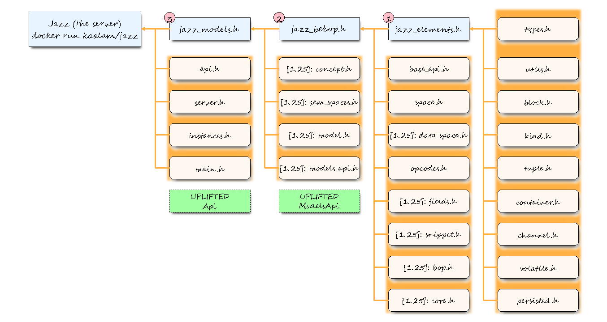

|
Jazz 0.5+
|
|
Jazz 0.5+
|
Programming Documentation of the Jazz Server
This diagram shows how the different Jazz modules fit.

The maturity level of the different modules is:
| Maturity | Description |
|---|---|
| nothing | Code is complete and tested. |
| [PROTO] | Code under active development, possibly working, but not release quality. |
| [DRAFT] | Code under active development, PoC in Python and API closed, but no working implementation in Jazz. |
| [FUTURE] | Code not under active development. Working on PoC. |
There are three C++ namespaces, intended for general c++ Jazz programming, possibly using external Jazz servers, but not necessarily as implemented as an http server:
Everything is in the Jazz repository.
Jazz (c) 2018-2021 kaalam.ai (The Authors of Jazz), using (under the same license):
Biomodelling - The AATBlockQueue class (c) Jacques Basaldúa, 2009-2012 licensed exclusively for the use in the Jazz server software.
Copyright 2009-2012 Jacques Basaldúa
BBVA - Jazz: A lightweight analytical web server for data-driven applications.
Copyright 2016-2017 Banco Bilbao Vizcaya Argentaria, S.A.
This product includes software developed at
BBVA (https://www.bbva.com/)
Licensed under the Apache License, Version 2.0 (the "License"); you may not use this file except in compliance with the License. You may obtain a copy of the License at
LMDB: Copyright 2011-2017 Howard Chu, Symas Corp. All rights reserved.
Licensed under http://www.OpenLDAP.org/license.html
Unless required by applicable law or agreed to in writing, software distributed under the License is distributed on an "AS IS" BASIS, WITHOUT WARRANTIES OR CONDITIONS OF ANY KIND, either express or implied. See the License for the specific language governing permissions and limitations under the License.
 1.8.17
1.8.17